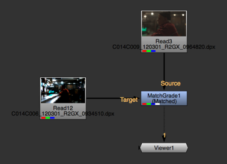
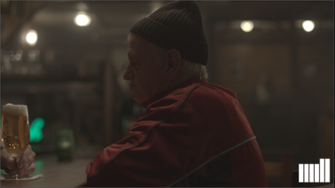
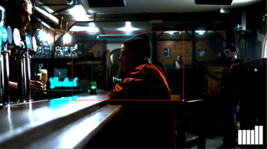
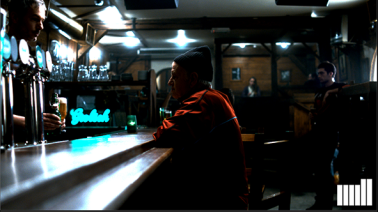
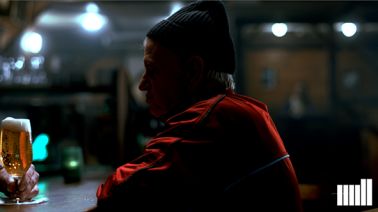

| 1. | Select Color > MatchGrade to insert a MatchGrade node into your script. |
| 2. | Do the following: |
• Connect MatchGrade's Source input to the clip to which you want to apply the color transform.
• Connect the Target input to the clip you want to match. This should be a completely different clip, a stereo pair for the Source clip, or the Source clip in a different format.
• Connect a Viewer to the output of MatchGrade.

| 3. | In the MatchGrade properties, set Task to Match Different Clip. |
| 4. | Set Output to Source and then Target to compare the Source and Target images. |
| 5. | When you find frames that cover similar content in the Source and Target clips, click on the |
For example, if you want grass in the Source clip to have the same color as grass in the Target clip, you need to choose frames where the relative amount of grass pixels is roughly the same. The more similar the content, the better MatchGrade is able to match the colors.
NOTE: You do not need to use the same number of Source and Target reference frames or set the same frames as reference frames for both.
If necessary, you can also use the  button to remove a frame from the set of reference frames.
button to remove a frame from the set of reference frames.
| 6. | If you only want to match certain elements between the Source and Target clips, supply a mask in both the Source and Target inputs' alpha channels and set Mask to either: |
• Alpha - to use the alpha channel from both inputs as a mask. Only the non-black areas of the Source and Target inputs' alpha channels are used in the MatchGrade analysis, and the grade is limited to the non-black areas of the Source alpha.
• Inverted Alpha - to use the inverted alpha channel from both inputs as a mask. Only the non-white areas of the Source and Target inputs' alpha channels are used in the MatchGrade analysis, and the grade is limited to the non-white areas of the Source alpha.
Masks can also be useful if you cannot find frames that cover approximately the same amount of similar content. For example, if the Source and Target inputs have a different amount of grass and sky, you can use a Roto node in both inputs to create masks that cover the same amount of grass and sky. Bear in mind that if you do so, the grade is only applied to the areas indicated by the mask in the Source input. To apply it to the entire frame, you need to export the grade first. For more information, see step 12.
|  |  |
| The Source image. In this case, you can set this image to have a fully opaque alpha... | ...and draw a mask like this on the Target image to ensure both inputs cover similar content. |
| 7. | When you're done setting reference frames, use the Transform dropdown menu to choose how to calculate the grade: |
• 3D LUT - Calculate the grade as a 3D look-up table (LUT). This allows you to export the grade to a .csp format, which you can use with the OCIOFileTransform node.
• CDL - Calculate the grade as a color decision list (CDL). This allows you to export the grade to an OCIOCDLTransform node.
NOTE: The CDL transform is limited and cannot model all types of color transformation. In most cases, selecting 3D LUT gives the best results.
| 8. | Set Output back to Matched and click Analyze Reference Frames. |
MatchGrade calculates the transform needed to match the Source image to the Target image.
| 9. | To evaluate the results, select the MatchGrade node and press D repeatedly to toggle between the original Source image and the graded output. |
|  | |
| The Source image. | The Target image. |
|  |
| The color-matched result. |
| 10. | If you're not happy with the results, try one or more of the following: |
• Look for better reference frames or use a mask in the Target input to make sure both inputs cover approximately the same amount of similar content.
• Use the Pre LUT dropdown menu to specify a 1D shaper LUT to use for the analysis: Linear or Logarithmic.
• Increase the LUT Resolution value. This is the resolution of the look-up table (LUT) in which MatchGrade stores the color transformation. Higher values can improve the results, but also increase processing time. The maximum value is 64.
• Set Colorspace to a different value. The correct setting to use depends on the nature of the transformation. Try each option to see which works best with your footage.
• Increase the Iterations value. This determines the number of refinement passes. Higher values can produce a better color match, but also take longer to process.
To update the results, click Analyze Reference Frames again.
| 11. | If you set Transform to CDL in step 8, you can fine-tune the grade manually by adjusting slope, offset, power, and saturation. The lock controls on the right prevent the values from being recalculated when you click Recalculate CDL, allowing you to set some values manually and estimate others automatically. For example, you can adjust and lock slope and offset and then click Recalculate CDL to automatically recalculate power and saturation. |
| 12. | If necessary, you can export the calculated grade and apply it to other nodes in your script. How you do this depends on whether you chose to calculate the grade as a 3D LUT or a CDL: |
• If you set Transform to 3D LUT, you can write the LUT into a .csp file and create an OCIOFileTransform node that you can use elsewhere in the script to apply the same grade. To do so, enter a file path and name for the .csp file in the LUT output file field and click Write to export the LUT. Then, click Create OCIOFileTransform to create an OCIOFileTransform node that applies the color transform from the .csp file.

• If you set Transform to CDL, you can click Create OCIOCDLTransform to create an OCIOCDLTransform node that uses the values in the CDL Output section of the MatchGrade properties.

TIP: You can also apply the grade to a different source by simply connecting a new node to MatchGrade's Source input.
|
|